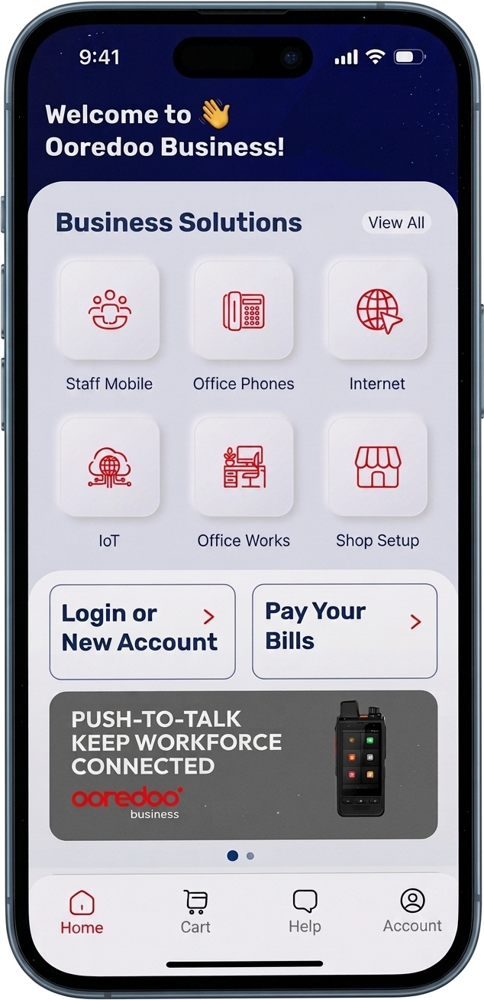
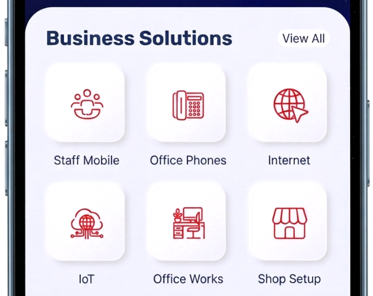

B2B Self-Service App
Built and commercialized Ooredoo’s first digital sales channel for SMB from scratch — a self-service buying motion that complemented direct field, retail, telemarketing, and indirect partner channels. Owned the end-to-end commercial design, operating model, and revenue performance of the channel — from business case to post-launch adoption and scaling. The work earned Ooredoo the Government’s Best Digital Transformation award in 2025.
Context
Ooredoo is a fast-paced multi-national corporation offering telecom, cloud, and
ICT services in 13 countries. Ooredoo Qatar is the head office
and leader of innovation across the group.
Problem
The SMB go-to-market motion was hitting structural limits — increasing CAC, slow onboarding, delayed
revenue, inconsistent customer experience across channels, and low scalability without adding headcount.
Proposition
Launch a scalable, self-service SMB acquisition channel that lowers CAC, accelerates
time-to-revenue, and expands coverage—fully integrated into Lead-to-Cash and aligned with assisted sales.

1
Channel Strategy & Business Case: Built the growth thesis for digital
SMB acquisition — segmented the addressable customer profiles ideal for self-service,
and modeled CAC, conversion, payback period, and margin impact versus
telesales/field/retail/partner motions. Drove cross-functional alignment across Sales, Operations, and IT
and secured executive sponsorship and investment approval.
2
Portfolio Strategy & Offer Rationalization:
The legacy SMB portfolio contained 3,000+ catalog records with inconsistent attributes,
overlapping bundles, and structural debt that made the offer impossible to commercialize consistently
across channels. Before a digital channel could carry revenue, the portfolio itself had to be made
sellable. Reorganized the entire SMB offer into six needs-based solution areas aligned to
customer buying intent — collapsing duplicates, retiring stale SKUs, and unifying pricing
and bundling logic. The resulting structure became the commercial architecture across every
customer-facing channel: field, retail, telemarketing, partner, and digital all sold the same
rationalized offer with the same taxonomy, eliminating channel-to-channel inconsistency on day one.

→

3
Commercial Governance & Prioritization:
Stood up a cross-functional governance model across Product, Engineering, Sales,
Operations, and Finance to run the channel as a commercial program rather than an IT delivery. Owned the
backlog and prioritized every release against three explicit criteria: revenue impact, customer
demand, and operational readiness. When stakeholder priorities competed — Sales pushing
for rep-assist features, Operations pushing for provisioning automation, Finance pushing for billing
parity — resolved the conflicts at the channel level, against the revenue model, and made the
final call. Governance kept the channel commercially coherent and shielded the roadmap from
feature-by-feature lobbying.
4
Route-to-Market & Operating Model: Designed channel handoff logic
between self-service, inside sales, and field teams, digital upsell and assisted-sales escalation
paths, and a
KPI framework for funnel conversion and revenue productivity. In parallel, mapped and
redesigned the full Quote-to-Cash journey — discovery, product selection, identity
and eligibility validation, ordering, provisioning, billing activation, service onboarding, and care and
support — so the digital motion ran on the same operating model as every other channel.
5
Channel Conflict Resolution: The new self-service app competed head-on with the field
sales force, threatening commissions and creating organizational resistance to the launch. Resolved the
conflict by designing two cooperative motions inside the app itself: "Schedule a meeting with
my rep" — a one-tap routing of high-intent SMB customers to their assigned field rep with
full account context pre-loaded; and "Rep-prepared order" — allowing the rep to
configure and price an order in the app, then send it to the customer for review and digital
self-approval. Reps were credited on both motions, turning the digital channel from a perceived threat
into a productivity multiplier and securing field-team buy-in for adoption.
6
Offer Design & Purchase Journey: Designed the end-to-end self-service offer and
purchase journey and validated it through customer testing before launch — ensuring
conversion economics matched or beat assisted channels, with funnel sequencing
prioritized by revenue impact rather than feature wishlist.

Low Fidelity Wireframes
7
Revenue Operations & Attribution Model: Owned the revenue-ops integration end-to-end
— CRM, billing, digital identity (SSO), OTP e-signature, and payment gateway — so digital
orders flowed through the same revenue pipes as every other channel. Designed the
attribution and commission model so credit reconciled cleanly back to the assisting
field rep when the digital order originated from a rep-driven motion, protecting commercial trust in
the channel.
8
Integrated RAG Sales Assistant: Embedded a retrieval-augmented generative
assistant on GPT-4o directly into the platform — grounded on the live tariff library,
product catalog, regulatory documentation, and the PLM-governed CMS. SMB customers got 24/7 in-app
answers on bundles, pricing, eligibility, and configuration with sources cited back, deflecting routine
inquiries from sales and support and turning the digital channel into a self-guided buying experience.
9
Commercial Execution Model: Ran the program as a commercial workstream
— sprints aligned to revenue milestones, not feature backlogs. Negotiated launch sequencing across
Sales Ops, Operations, and IT to ship the first release in 9 months — agreeing to launch with
automated ordering and manual provisioning as a transitional state to get revenue
flowing on day one, with a phased integration roadmap behind it. Followed with iterative releases that
expanded the channel's revenue capabilities.
10
Launch Strategy & Adoption: Managed a controlled beta with 50 SMB customers
to gather final usability feedback, with Google Analytics integrated to monitor traffic and user
behavior. Coordinated the GTM strategy with the Marketing team across all channels — App Store
optimization, social media assets, and digital campaigns — ensuring full readiness at launch.
11
Post-Launch Optimization: Ran the channel as an ongoing commercial program, not a
shipped project. Stood up funnel analytics across every step of the purchase journey,
built conversion optimization tests at the highest-leverage drop-off points, and ran
structured abandonment analysis on incomplete orders to feed product fixes back into
the backlog. Prioritized each subsequent release against measured performance data — revenue lift,
conversion lift, completion-rate gains — rather than feature wishlists, driving
continuous improvement of channel economics quarter over quarter.


12
Launch & Results:
Delivered on time and within budget. In the first quarter post-launch, 10% of new SMB
activations flowed through the digital channel — on track to the modeled channel-mix
target — while cutting average order processing time by 35%. Digital orders CAC
dropped 50% due to savings on channel partner commissions, lifting the CAC:LTV ratio,
and customer onboarding time dropped from 3 days to 8 hours.


The team celebrating successful launch
In 2025, Ooredoo received the Best Digital Transformation award from the Ministry
of Communications and Information Technology in recognition of the achievement and the impact on
leading digital transformation in the State.

Outcomes
- Built a new digital acquisition channel (0→1) — now a permanent channel alongside field, retail, telemarketing, and partner distribution
- Reduced CAC by 50% and improved CAC:LTV by 30%
- Cut onboarding time from 3 days to 8 hours
- Moved SMB growth from labor-intensive to tech-enabled scale with no incremental headcount
- Standardized the GTM catalog across all channels
- Established the foundation for AI-assisted and self-service revenue motions and faster rollout of new products and journeys
- Won Best Digital Transformation award